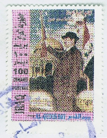

“Jésus-Christ est le même hier, aujourd’hui, et éternellement” (Hébreux 13.8).
LETTRE CIRCULAIRE N° 54
FEVRIER 2003
De tout coeur je vous salue tous dans le précieux Nom du Seigneur Jésus-Christ, avec la parole dApocalypse 3.21:
Celui qui vaincra, je lui donnerai de sasseoir avec moi sur mon trône, comme moi aussi jai vaincu et je me suis assis avec mon Père sur son trône.
Dans chacune des sept lettres aux Eglises la promesse est adressée aux vainqueurs. Qui donc sont-ils ceux auxquels lhonneur sera accordé de sasseoir avec Lui sur le trône? Le Vainqueur de Golgotha, merveilleusement ressuscité, le promet à tous ceux qui vaincront comme moi aussi jai vaincu. Lors de louverture du Livre scellé il est dit: Ne pleure pas: voici, le lion qui est de la tribu de Juda, la racine de David, a vaincu pour ouvrir le livre et ses sept sceaux (Apoc. 5.5). Il a vaincu toutes choses: la mort, Satan, même tout lenfer, et Il est ressuscité victorieusement.
Les lettres aux sept Eglises, qui ont un caractère prophétique et symbolisent aussi le caractère du cours de lhistoire du salut, sont publiées au travers de chaque ange de lEglise concernée, avec les louanges et les réprimandes faites aux croyants en général. Bien entendu, les promesses sont toujours valables uniquement pour les vainqueurs. Ce sont eux qui écoutent ce que lEsprit dit aux Eglises et sont ainsi vainqueurs par la Parole sur lennemi déjà vaincu, de même que le Seigneur la déjà vaincu par la Parole lors de la tentation. Après avoir établi ce point décisif nous pourrions placer le mot «Sélah», comme il est souvent employé dans les psaumes. Ce mot signifie quil faut «sarrêter, se tenir tranquille, sapprofondir dans ce qui vient dêtre dit et lu». Il sagit ici de la plus grande leçon. Lennemi vient toujours avec ce mot: «Il est écrit!», mais il lôte de son contexte et le redonne faussement. La tentation de notre Seigneur consistait en une épreuve directe par la Parole. Cest exactement en cela quelle consiste maintenant pour les croyants. Ils doivent démasquer la ruse de lennemi et opposer à son: «Il est écrit» le: «Il est aussi écrit» afin de le contraindre par cela à la fuite. Nous devons nous-même devenir comme le Maître. Il était la Parole devenue chair, et à cause de cela cest avec raison quIl a employé la Parole écrite et révélée, et quIl a pu de cette manière vaincre lennemi. Le diable dut finalement abandonner le combat et se retirer de Sa présence (Mat. chap. 4). Maintenant la Parole révélée doit devenir une réalité vivante et vécue dans lEglise. La Parole écrite ne doit pas seulement se trouver dans la bouche, mais devenir au contraire une Parole vécue. Cest seulement ainsi que le diable peut être vaincu dune manière définitive, afin quil se retire de nous.
Nous lisons dans la sixième lettre aux Eglises: Parce que tu as gardé la parole de ma patience, moi aussi je te garderai de lheure de lépreuve qui va venir sur la terre habitée tout entière, pour éprouver ceux qui habitent sur la terre (Apoc. 3.10). Maintenant, dans la dernière période, celle où toute la plénitude de la Parole a été révélée, cest aussi lheure de la tentation. Cest une tentation directe qui vient sur la terre entière, car désormais la Parole, lEvangile du Royaume, est prêché en témoignage à tous les peuples. Les uns sont conduits par lEsprit, de passage biblique en passage biblique, les autres sortent les passages bibliques de leur contexte et ne peuvent pas résister à la tentation. Le fait de demeurer dans la Parole conduit à la compréhension de Sa signification et à Son accomplissement, alors que laction de donner une fausse interprétation à la Parole conduit à la tentation et à la chute.
Après que lAgneau immolé ait pris le Livre de la main droite de Celui qui était assis sur le trône, le nouveau cantique des quatre êtres vivants et des vingt-quatre anciens retentit au son des harpes: Tu es digne de prendre le livre, et den ouvrir les sceaux; car tu as été immolé, et tu as acheté pour Dieu par ton sang, de toute tribu, et langue et peuple, et nation; et tu les as faits rois et sacrificateurs pour notre Dieu, et ils régneront sur la terre (Apoc. 5.9,10).
Cest la troupe des premiers-nés rachetés par le Sang qui, durant les âges de lEglise, ont été appelés à sortir par le Message divin et ont été épurés et purifiés. Les véritables rachetés sen vont dans lobéissance de la foi droit dans le chemin de lAgneau, portant leur propre ignominie et la Sienne, en prenant sur eux leur propre croix et la Sienne. Bien quétant enfants de Dieu ils sont trouvés, dans leur apparence extérieure, semblables à tous les humains. En tant que véritable semence dAbraham, ils tiennent, eux aussi, ferme aux promesses et ne se laissent pas égarer par lincrédulité. Ils vivent dans la ferme conviction que Dieu est plus que capable daccomplir ce quIl a promis.
La troupe des vainqueurs est vraiment destinée, après le Repas des Noces, à demeurer dans la gloire avec Christ, le Roi, et à exercer la domination ici sur la terre. Cette troupe est aussi appelée dans lApocalypse: «le fils mâle». Celui-ci naît de lensemble de lEglise et gouvernera tous les peuples. Ce sont les croyants qui sont parvenus à létat dhomme fait, à la mesure de la stature de la plénitude du Christ (Eph. 4.13). Nous pouvons lire une courte, mais profonde description des vainqueurs dans Apocalypse 12.10,11: Et jouïs une grande voix dans le ciel, disant: Maintenant est venu le salut et la puissance et le royaume de notre Dieu et le pouvoir de son Christ, car laccusateur de nos frères, qui les accusait devant notre Dieu jour et nuit, a été précipité; et eux lont vaincu à cause du sang de lAgneau et à cause de la parole de leur témoignage; et ils nont pas aimé leur vie, même jusquà la mort. Cette même promesse est faite aux vainqueurs dans Apocalypse 2.26,27: Et celui qui vaincra, et celui qui gardera mes oeuvres jusquà la fin, je lui donnerai autorité sur les nations; et il les paîtra avec une verge de fer .
Nous sommes arrivés à la fin du temps de la grâce; ce fait est très clairement placé devant nos yeux par les signes des temps et laccomplissement des prophéties bibliques dans tous les domaines. Cest pourquoi nous devons nous attendre à ce que le dragon, au travers de sa puissance dans lEglise mondiale, se tienne bientôt devant la femme lEglise. Dès le commencement, lEglise du Nouveau Testament a été édifiée sur le fondement des apôtres et des prophètes (Eph. 2.20) et couronnée de la doctrine des douze apôtres (Apoc. 12.1). Maintenant, avant le retour de Christ, avant que narrive le grand et terrible jour du Seigneur, Dieu a promis de rétablir toutes choses et de les mettre à leur juste place (Actes 3.19-21). Dans le dernier verset du dernier chapitre de lAncien Testament se trouve lannonce: Voici, je vous envoie Elie, le prophète . Le Seigneur Lui-même a confirmé dans Matthieu 17.11 et Marc 9.12 cette promesse qui devait saccomplir aujourdhui. LEglise est représentée par une femme, parce que la divine Semence de la Parole a été placée en Elle. De même que la Semence promise, par procréation, a été placée dans le sein de Marie et que le Fils est né, ainsi la Parole de promesse est placée maintenant dans lEglise, afin que le fils mâle puisse être manifesté.
De même quau commencement lEglise se trouvait dans la doctrine des apôtres (Actes 2.42), cest ainsi que lapôtre Jean la vit également à la fin, après le plein rétablissement de toutes choses! Et maintenant les choses deviennent sérieuses, très sérieuses: Les vrais enfants de Dieu ne croient pas ce quils veulent; ils croient ce que Dieu a promis, comme le fit le père de notre foi, Abraham (Rom. chap. 4; Gal. chap. 3). Cest pourquoi comme Isaac ils sont aussi appelés «enfants de promesses» (Rom. 9.7,8; Gal. 4.23,28).
Ils croient seulement ce que dit lEcriture, et de la manière dont Elle le dit, parce quils ont reconnu que seule la Parole de Dieu est la Semence originelle (Luc 8.11). Elle, qui croît dans les fils du Royaume de Dieu (Mat. 13.37,38), et cest en Elle que se trouve réellement la Vie de Dieu. Ils ont également compris quen chaque interprétation de la Parole faite depuis le jardin dEden, se trouve la mort spirituelle. Ils vivent de chaque Parole et La croient telle quElle est écrite. Ils ont en horreur toute interprétation faite de sa propre autorité. Cest aussi la raison pour laquelle ils sont victorieux à cause de la Parole de Dieu, tout comme le Fils de Dieu qui a vaincu. La Parole de Dieu est aussi pour eux lEpée de lEsprit quils emploient, par la foi biblique, contre lennemi. Ils se revêtent de toute larmure de Dieu, sont pénétrés de la Vérité et ainsi leurs reins sont ceints. Cest ainsi seulement quils peuvent éteindre toutes les flèches enflammées du méchant (Eph. chap. 6).
Tous les hommes ont une foi quelle quelle soit; même le diable croit, et il tremble. (Jacq. 2.19). Le monde entier est plein de croyants. Il y a les croyants Juifs, les croyants Musulmans, les croyants Chrétiens, les croyants Hindous, les croyants Bouddhistes, etc.; oui, le monde religieux entier est croyant à sa façon. Cependant, auprès de Dieu, lAuteur de la Bible, seule la foi en Lui-même et en ce quIl a dit et promis, est valable. Toute autre chose est religion fabriquée par lhomme et na absolument aucune valeur devant Lui. Dieu a uniquement pris la responsabilité de ce quIl a décidé dans Son plan de salut, tout comme aussi des promesses qui sy trouvent. Car autant il y a de promesses de Dieu, en lui est le oui et en lui lamen, à la gloire de Dieu par nous (2 Cor. 1.20). La foi biblique valable devant Dieu se trouve toujours ancrée dans les promesses de Dieu, et seul celui qui croit comme le dit lEcriture est justifié auprès de Dieu. Seul celui qui prête loreille pour écouter ce que lEsprit dit aux Eglises, peut faire partie de la troupe des vainqueurs, cest pour lui que la promesse finale est valable: Celui qui vaincra héritera de ces choses, et je lui serai Dieu, et lui me sera fils (Apoc. 21.7).
LE TEMPS EST TOUT PROCHE
Et je demande ceci dans mes prières, que votre amour abonde encore de plus en plus en connaissance et toute intelligence, pour que vous discerniez les choses excellentes, afin que vous soyez purs et que vous ne bronchiez pas jusquau jour de Christ, étant remplis du fruit de la justice, qui est par Jésus-Christ à la gloire et à la louange de Dieu (Phil. 1.9-11).
Paul avait lassurance, comme je lai également, que le Seigneur fidèle a commencé, par grâce, Son oeuvre dans les rachetés et quIl lamènera à son achèvement. De même que Dieu acheva Son oeuvre de création au septième jour, ainsi Il achèvera au septième millénaire loeuvre de rédemption pour léternité. Au commencement du dernier jour, connu comme le «jour du Seigneur», et en relation avec le retour de lEpoux comme le «jour de Christ», a lieu la première résurrection et, à la fin, la deuxième résurrection. Il sagit maintenant de regarder dans le miroir de la Parole pour nous examiner devant Dieu, non pour enlever la paille dans loeil du prochain, mais bien pour enlever la poutre de notre propre oeil. De cette manière uniquement, nous reconnaîtrons conformément à Sa Parole ce qui est juste dans chaque cas. Seulement ainsi nous aurons une vue claire. Nous ne pouvons plus nous permettre de vivre en supposant que tout est en ordre et que nous arriverons de toute manière au but. Nous sommes, en effet, la génération qui pour la première fois et, comme jen suis persuadé, pour la dernière fois peut réellement dire: Nous ne nous endormirons pas tous, mais nous serons tous changés (1 Cor. 15.51).
Nous vivons dans le temps où le cri du réveil retentit (Mat. chap. 25). Nous sommes la génération qui vit en direct la prédication de lEvangile du Royaume rendant témoignage à tous les peuples. Et après cela viendra la fin (Mat. 24.14). A ce moment-là deviendra réalité cette parole: Alors deux hommes seront au champ, lun sera pris et lautre laissé; deux femmes moudront à la meule, lune sera prise et lautre laissée (Mat. 24.40,41). Et avant que saccomplisse Matthieu 25.10: et celles qui étaient prêtes entrèrent avec lui aux noces, conformément à Matthieu 24.45, à tous ceux qui portent le Message de Dieu et lacceptent, sera donnée la pleine mesure de nourriture, toute la plénitude de la Parole.
Ce qui a été promis à lEglise peut seulement saccomplir lorsque le temps est venu pour cela. Les circonstances accompagnant lévénement doivent être telles quelles ont été annoncées. Les prophéties bibliques doivent être maintenant vues comme lors de la première venue de Christ, dans lensemble de leur accomplissement. Nous avons le privilège de vivre maintenant et de voir laccomplissement des prophéties faites à lavance. De même aussi vous, quand vous verrez toutes ces choses, sachez que cela est proche, à la porte (Mat. 24.33; Marc 13.29; Luc 21.31). Lheure dans laquelle nous vivons nous commande dêtre au plus haut degré dalarme: Veillez donc, priant en tout temps, afin que vous soyez estimés dignes déchapper à toutes ces choses qui doivent arriver, et de vous tenir devant le Fils de lhomme (Luc 21.36).
Au commencement le Ressuscité fit cette promesse aux Siens: Et voici, moi, jenvoie sur vous la promesse de mon Père. Mais vous, demeurez dans la ville, jusquà ce que vous soyez revêtus de puissance den haut (Luc 24.49). Il confirme encore une fois cela peu de temps avant Son ascension, comme il nous est dit dans Actes 1.8: Mais vous recevrez de la puissance, le Saint-Esprit venant sur vous; et vous serez mes témoins à Jérusalem et dans toute la Judée et la Samarie, et jusquau bout de la terre.
Dans le deuxième chapitre des Actes nous voyons laccomplissement de cette promesse, qui sétend à toute la période du Nouveau Testament, car la Parole sexprime ainsi: Car à vous est la promesse et à vos enfants et à tous ceux qui sont loin, autant que le Seigneur notre Dieu en appellera à lui (v. 39).
Il sagissait de la puissance du Saint-Esprit qui, en tant que puissance agissante de Dieu, joint ensemble les membres du Corps de Christ en un organisme vivant. De cette manière, les ministères et les dons sont placés dans lEglise afin que le Rédempteur puisse poursuivre Son oeuvre au travers des rachetés. Il a dit avec vérité: Comme le Père ma envoyé, moi aussi je vous envoie (Jean 20.21-23 et autres). Il sagit maintenant de la puissance de résurrection qui transforme, qui non seulement renouvelle le coeur et la vie, mais qui peut encore transformer le corps mortel et le placer dans limmortalité, comme il est écrit: Et si lEsprit de celui qui a ressuscité Jésus dentre les morts habite en vous, celui qui a ressuscité le Christ dentre les morts vivifiera vos corps mortels aussi, à cause de son Esprit qui habite en vous (Rom. 8.11).
De même que la création entière attend la révélation des fils de Dieu, ainsi nous aspirons à la délivrance de nos corps, à leur transmutation (Rom. 8.18-27). Cette espérance ne rend point honteux parce que lamour de Dieu est versé dans nos coeurs par lEsprit Saint qui nous a été donné (Rom. 5.5).
Lamour de Dieu est ce quil y a de plus grand: Dieu est amour! Et au travers de Son Esprit, qui est réellement Son être intime (1 Cor. 2.6-16), Il fait des Siens Son habitation, à travers eux Il vit Sa Vie avec toutes Ses caractéristiques et Ses vertus. Cest uniquement lorsquen nous est devenu vrai: Je suis crucifié avec Christ! (Gal 2.20a), que peut devenir vrai: Je ne vis plus, moi, mais Christ vit en moi (Gal. 2.20b), et: Or si nous sommes morts avec Christ, nous croyons que nous vivrons aussi avec lui (Rom. 6.8). Lamour de Dieu a été manifesté à la croix de Golgotha par le don du Fils pour tous les fils et filles de Dieu. Dans cet amour, le plein pardon et la pleine réconciliation ont été réalisés. Celui qui ne vit pas le pardon et la réconciliation nest pas mort avec Christ, mais au contraire il est un homme trompé, quel quil soit. Celui qui pratique dans cette vie lirréconciliabilité et linimitié na point de place là-bas; il met de côté la croix avec le pardon et la réconciliation et foule aux pieds le Sang de lalliance. Celui qui ne vit pas le «Notre Père», lABC de lhomme croyant, na pas du tout besoin de prononcer cette prière. En effet, dans cette prière se trouve encore: Car si vous pardonnez aux hommes leurs fautes, votre Père céleste vous pardonnera aussi à vous; mais si vous ne pardonnez pas aux hommes leurs fautes, votre Père ne pardonnera pas non plus vos fautes (Mat. 6.14,15).
Nous avons sans cesse entendu dire que seul lamour parfait entrera là-bas. Dans la première épître aux Corinthiens, chapitre 13, il nous est montré que les dons de lEsprit, comme les langues des hommes et des anges, le don de prophétie, la connaissance, même la foi qui transporte les montagnes, sont des choses vaines sans lamour de Dieu. Du verset 4 au verset 7, la nature de lamour divin dans la vie pratique nous est décrite. Ce nest pas seulement les fautes et les péchés, cest-à-dire les véritables transgressions de la loi, que nous avons commis les uns à légard des autres que nous devons pardonner, mais aussi les fautes commises, ne pas imputer le mal, mais bien suivre ce qui est écrit: Que toute amertume, et tout courroux, et toute colère, et toute crierie, et toute injure soient ôtés du milieu de vous, de même que toute malice; mais soyez bons les uns envers les autres, compatissants, vous pardonnant les uns aux autres comme Dieu aussi, en Christ, vous a pardonné (Eph. 4.31,32). Nous devons veiller à ce quaucune amertume, qui est véritablement la racine de tout mal, ne vienne à lever en nous. Cest seulement après que tout ceci soit devenu vrai dans notre vie, et que nous ayons pris part à la nature divine, que nous pourrons tout à fait concrètement compter prendre part à lenlèvement. Nous devons revenir au premier amour et le vivre réellement dans la pratique.
LE RETABLISSEMENT DU QUATRIEME EMPIRE
Comme lon chantait sous le Troisième Reich: « car aujourdhui lAllemagne nous appartient, et demain le monde entier», ainsi maintenant dans le «Quatrième Reich», le texte pourrait être le suivant: « car aujourdhui lEurope nous appartient, et demain le monde entier».
Le prophète Daniel vit se succéder en vision les empires de ce monde. La situation politique et historique lui fut plus particulièrement montrée dans une vue densemble. Cela commença par lEmpire Babylonien (606-536 av. J.-C.), qui fut suivit de celui des Mèdes et des Perses (jusquen 330 av. J.-C.), puis de celui des Grecs (jusquen 30 av. J.-C.), et finalement lEmpire Romain. (Comment cela aurait-il pu en être autrement?) Dans Daniel 2.40-44 le prophète décrit plus particulièrement le dernier empire: Et le quatrième royaume sera fort comme le fer. De même que le fer broie et écrase tout et que le fer brise toutes ces choses, il broiera et brisera (Dan. 2.40).
Lempire a la solidité du fer des pays industriels de lOuest et la fragilité de largile de la faible économie des pays de lEst européen. Cela est décrit symboliquement par une statue ayant sa tête, sa poitrine, ses bras, ses hanches, ses jambes, ses pieds, y compris ses dix doigts en partie dargile et en partie de fer. Lunion tient seulement pour un certain temps, car le fer et largile ne se laissent pas mélanger, mais ils seront unis lun à lautre pour être la puissance fatale du temps de la fin. Cependant, à la fin des temps, le Dieu du Ciel anéantira tous les royaumes qui se sont unis dans ce dernier empire, et Il établira Son Royaume éternel. La Pierre, que nous connaissons comme la Pierre de langle, est aussi la Pierre du faîte, et Elle se détachera sans le secours daucune main humaine, et détruira le dernier empire (Dan. 2.34,35).
Dans le chapitre 7, le prophète entre encore davantage dans les détails de ce quatrième empire et il écrit: Après cela je vis dans les visions de la nuit, et voici une quatrième bête, effrayante et terrible et extraordinairement puissante, et elle avait de grandes dents de fer: elle dévorait et écrasait; et ce qui restait, elle le foulait avec ses pieds. Et elle était différente de toutes les bêtes qui étaient avant elle; et elle avait dix cornes Alors je désirai de savoir la vérité touchant la quatrième bête, qui était différente delles toutes, extraordinairement terrible: ses dents étaient de fer, et ses ongles, dairain; elle dévorait, écrasait, et foulait avec ses pieds ce qui restait Il dit ainsi: La quatrième bête sera un quatrième royaume sur la terre, qui sera différent de tous les royaumes, et dévorera toute la terre, et la foulera aux pieds et lécrasera. Et les dix cornes ce sont dix rois qui surgiront du royaume (Dan. 7.7,19,23,24).
Celui qui connaît les prophéties bibliques sait que les têtes représentent la conduite et le gouvernement, alors que les cornes indiquent la puissance dattaque militaire et religieuse. Dans lalliance des pays de lOuest nous avons les G7, qui sont les plus importants pays industriels du monde. La Russie, sans droit de parole, est tolérée en tant que huitième pays. Dans Apocalypse 13.1-10 nous trouvons également une description de la dernière puissance mondiale. Le dragon lui-même donne à cette dernière bête, sa force, son trône et une grande autorité (v. 2).
De même que Dieu a choisi une ville sur la terre, à partir de laquelle Il va régner, cest-à-dire Jérusalem, ainsi Satan a réellement choisi Rome comme capitale mondiale. Dans les prophéties bibliques, la constellation de la dernière puissance mondiale politique et religieuse nous est décrite sans équivoque dans Apocalypse, chapitres 17 et 18. Limage de la prostituée chevauchant la bête est claire. La puissance spirituelle religieuse chevauche la puissance temporelle politique, ce qui veut dire quelle tient les rênes entre ses mains. Lensemble constitue la «Grande Babylone» et ce sont les sept têtes qui la conduise, mais ces têtes indiquent aussi les sept montagnes où la puissance mondiale religieuse, qui exerce en même temps la puissance mondiale politique, se trouve à la maison. Le huitième est le représentant, cest-à-dire celui qui représente le monde religieux entier et appartient politiquement aux sept. Les dix cornes, les dix Etats, se rangent à son côté «par contrainte» et mettent leur puissance à sa disposition aussi longtemps que nécessaire, jusquà ce que les Paroles de Dieu soient accomplies (v. 12-18).
Actuellement, exactement dix Etats de lancien bloc de lEst veulent entrer dans lalliance de lOuest dont ils ne font pas encore partie. Dici au 1er mai 2004, ils devraient y être incorporés pleinement. La première assemblée commune de la Nato a déjà eu lieu les 22 et 23 novembre 2002 à Prague, et elle a une signification historique. La Russie aussi devrait entrer dans lUnion Européenne, selon ce que demandent les politiciens à Bruxelles, mais également dautres Etats. Le président des Etats-Unis Georges W. Bush, tout juste après le sommet de la Nato à Prague, a rencontré le chef du Kremlin, Wladimir Putin, à Saint-Pétersbourg. Sous nos yeux saccomplissent les prophéties bibliques. Nous le voyons, nous vivons cela! Egalement en ce qui concerne le développement politique, nous sommes tout proche de la fin. Ce nest que tout à la fin que sera manifesté qui sont les dix cornes. Non seulement elles engageront leur force de frappe en troupes terrestres, mais seront aussi en mesure de consumer par le feu la grande prostituée, Babylone (Apoc. 17.16-18). Ce sera un moment tout à fait décisif lorsque Israël sera reçu dans lEurope Unie, comme Netanyahou il ny a pas longtemps, appelé en tant que ministre des affaires étrangères dans le cabinet de Sharon, la proposé lors de sa première conférence de presse, en novembre 2002. Conformément à Daniel, ce sera un traité de sept ans, comme létaient déjà les accords dOslo. Ce traité de sept ans sera toutefois rompu après trois ans et demi (Dan. 9.27).
Depuis le 1er janvier 2002, nous vivons lUnion Monétaire Européenne: 380 millions de personnes sur le vieux continent payent avec la même monnaie. Le quatrième empire est présent et exerce maintenant partout où cest nécessaire, au travers des décisions de lONU, une autorité de fer dans le monde entier. En premier lieu, après lunification de lEurope, les Etats-Unis en tant que dernière puissance du monde restante, conduisent encore sous le couvert de «lutte anti-terroriste». LEurope Unie, en tant que «puissance mondiale» dans laquelle sont réunies la religion, la politique, le pouvoir économique, prendra à la fin la direction de la politique mondiale.
Ce quil faut aussi remarquer, cest la concentration du pouvoir inébranlable de lEtat du Vatican. Il a réussi à confirmer son indépendance en tant quEtat, en faisant frapper une émission spéciale de 65 000 exemplaires de la monnaie de leuro en cours avec le portrait du Pape, et cela malgré lopposition de la Banque Centrale Européenne. Les huit sortes de pièces ne sont cependant pas en libre circulation. Les collectionneurs paient déjà maintenant plus de 500 euros pour un jeu de pièces de monnaies dune valeur nominale de seulement 3.88 euros. La monnaie à leffigie du Pape est considérée comme précieuse parce que cest lui, en 1989, qui a renversé le communisme mondial et uni lEurope sous la domination «catholique-chrétienne»! Tous les initiés savent que la politique du Vatican a joué le rôle principal, aussi bien dans la réunification de lAllemagne que dans celle de lEurope, comme aussi dans la globalisation et lunion de la communauté des Etats de ce monde. Il continuera à jouer un rôle jusquà la réalisation du nouvel ordre mondial. Les Etats-Unis, qui déjà depuis leur naissance voulaient instituer un nouvel ordre mondial, comme cela est écrit en latin sur le billet de un dollar NOVUS ORDO SECLORUM seront à la fin relevés de leur position de puissance mondiale prédominante et devront se contenter de la deuxième place, afin que le «nouvel ordre mondial» puisse être établi.
Le terrible événement du 11 septembre 2001 aux Etats-Unis, lorsque des terroristes islamistes tranchèrent la gorge des pilotes et dirigèrent les avions entièrement occupés contre les tours jumelles du World Trade Center à New York, a leffet dun signal davertissement. Le désir du Président américain est de prendre toutes les nations dans «son bateau» pour sa lutte contre le terrorisme. Ainsi une étrange constellation prend forme, certain se ralliant spontanément, dautre sous la contrainte politique, cest-à-dire sous la «pression exercée à cause du pétrole». Puisque cest le temps de la fin, là aussi nous devons consulter les prophéties du temps de la fin qui sy rapportent, car en elles se trouvent décrit à lavance le cours des événements et de lhistoire. En ce qui concerne lIrak, lEuphrate est citée, laquelle prend sa source en Turquie, arrose tout lIrak, passe à côté de Bagdad, traverse la Mésopotamie en passant près de Ur en Chaldée, puis à côté de Bassora et débouche enfin dans le Golfe Persique. Là, où se trouvait le Paradis, là, où se trouvait le berceau de lhumanité, là, où Abraham a vécu, cest là aussi que se trouvent liés les quatre anges de jugement, qui attendent dêtre déliés lorsque le tiers de lhumanité devra être mis à mort. disant au sixième ange qui avait la trompette: Délie les quatre anges qui sont liés sur le grand fleuve Euphrate. Et les quatre anges qui étaient préparés pour lheure et le jour et le mois et lannée, furent déliés, afin de tuer le tiers des hommes (Apoc. 9.14,15). Là-bas, dans le Paradis, Satan a entraîné les premiers hommes sous son influence. Cest là que la tragédie de lhumanité a commencé, sous sa domination directe. Dans cette région, le prince de ce monde va unir, à la fin, tous les royaumes du Nord et de lEst, afin de conduire lattaque contre Israël, au cours de laquelle le monde sera embrasé particulièrement les Etats-Unis dAmérique qui se tiennent aux côtés dIsraël.
Dans la politique mondiale, il sagit encore une fois principalement dIsraël. Il sagit de Jérusalem, du Mont du Temple, de Morija où Abraham offrit Isaac en sacrifice (Gen. chap. 22), de laire au milieu des monts de Morija que David acheta du Jébusien Ornan pour 600 sicles dor et sur lequel Salomon bâtit le Temple (2 Chr. 3.1).
Celui qui reçoit des lettres dIrak voit sur le timbre poste le Président irakien, une arme à la main, posté devant le Dôme du Rocher sur lesplanade du Temple à Jérusalem. En dépit de ce que peuvent entreprendre les Etats-Unis, lONU ou lEU, le Mont du Temple et Israël demeurent jusquà la fin la pomme de discorde. Même les prières faites dans de bonnes intentions par les croyants bibliques ne changent rien au plan des temps de la fin arrêté par Dieu. Ce nest quau dernier moment, et même lors du nouveau commencement, que saccomplira cette parole: Et il arrivera, à la fin des jours, que la montagne de la maison de lEternel sera établie sur le sommet des montagnes, et sera élevée au-dessus des collines (Michée 4.1a). Mais si la préparation de la grande tragédie, qui aura lieu après lenlèvement de lEpouse, est déjà pleinement en cours, combien proche doit être lenlèvement de lEglise-Epouse! Cest pourquoi notre préparation doit être le commandement de lheure, afin que vous soyez estimés dignes déchapper à toutes ces choses qui doivent arriver et cela devrait être notre souhait et notre prière (Luc 21.36).
Lorsque nous observons tout ce qui se passe maintenant en Europe, en Israël et dans le monde entier, on peut sans cesse dire et répéter, en gardant loeil sur laccomplissement des prophéties bibliques: Aujourdhui cette Ecriture est accomplie devant vos yeux!. Parmi les croyants bibliques qui ont véritablement reconnu le temps et lheure, le cri «Maranatha, viens bientôt!», devrait retentir toujours plus fort.
LEGLISE ET LA HAINE DES JUIFS
Depuis 1948, année de la fondation de lEtat dIsraël dans les temps modernes, celui-ci se trouve quotidiennement cité dans les nouvelles. Auparavant avait eu lieu le terrible Holocauste, qui éteignît six millions de vies, parmi lesquelles se trouvait un million et demi denfants. Il est clair que dans lhistoire, un tel génocide ne pouvait se perdre sans retentir bruyamment. Plus de cinquante mille publications dans le monde entier se sont occupées de ce thème. Quelques auteurs ont même osé impliquer lEglise de Rome dans la responsabilité de ces actes, et plus particulièrement celle du pape Pie XII, en fonction durant la guerre. Rolf Hochhuth, Dr. Karlheinz Deschner, Daniel Jonah Goldhagen et John Cornwell, pour nen nommer que quelques-uns, ont un peu levé le voile de pourpre et en cela ils ont fait la chose la plus dangereuse quun homme puisse risquer sur la terre. En effet, selon la définition personnelle de lEglise de Rome, elle est la seule Institution légitime de Dieu sur la terre, et elle prétend avoir été fondée par Christ lui-même. Elle affirme que hors de lEglise il ny a point de salut car, dit-elle, seul celui qui a lEglise pour mère a Dieu pour Père car cette Eglise serait bâtie sur Pierre, le prince des apôtres, et ainsi le monde entier devrait lui appartenir. Egalement selon sa compréhension personnelle du dogme de la succession apostolique, et plus particulièrement depuis la proclamation en 1870 du dogme de linfaillibilité papale, les Papes considèrent être les substituts de Dieu sur la terre, être des «Vicarius Filii Dei», qui gouvernent à la place de Christ sur la terre.
De lEglise de Rome se sont échappées beaucoup de fautes graves quil est impossible de réparer. Jésus-Christ a dit: Mon royaume nest pas de ce monde. Et Il dit de nouveau: Sur ce rocher jédifierai mon Eglise!. Il ne dit pas: «Sur toi Pierre, jédifierai Mon Eglise». Cest sur la révélation de Jésus-Christ, que lEglise a été fondée. Cette révélation a été donnée à Pierre par le Père.
Le développement fatal de lEglise a commencé par le mensonge de la «donation de Constantin» sur laquelle elle fonde ses revendications temporelles de possession. En réalité, lEglise de Rome nest pas davantage fondée par Christ quaucune autre Eglise qui se réclame de Lui. En tant que dénomination, lEglise de Rome nexiste que depuis le 4ème siècle. Du temps de Paul nexistait à Rome, tout comme dans dautres villes, quune petite communauté de maison. Lapôtre Paul est resté deux ans là-bas et cest dans le logement quil louait quil tenait des réunions (Actes 28.30,31).
Ni la Bible, ni lhistoriographie, ne mentionnent que Pierre ait entrepris un voyage à Rome. Cela aurait été un événement dont on aurait entendu parler. Il nous est seulement parlé dun certain Simon Magus, qui, en tant que magicien, sest même présenté devant le Sénat Romain. Lhistoire de lEglise catholique toute entière ne repose que sur une foule de légendes.
En réalité, cest seulement au Concile de Nicée quest née lEglise de Rome. Jusque là cohabitait environ 130 tendances de foi différentes au sein du Christianisme. Des années 54 à 312/313, les chrétiens sous la domination des empereurs romains, furent généralement persécutés. Cette persécution commença avec Néron, et se termina de façon la plus cruelle avec Dioclétien. Jusque-là les Juifs avaient un statut particulier dans lempire Romain; ils navaient pas besoin de prendre part aux festivités faites en lhonneur des dieux. En 324, lempereur Constantin se déclara être «le vicaire de Christ», «le Seigneur de lEtat», et «le Seigneur de lEglise», le «Pontifex Maximus». La même année, il donna lordre dagrandir Constantinople, et non Rome, pour en faire la capitale de lEmpire. Constantin, qui est un meurtrier notoire, convoqua en 325 le Concile de Nicée pour unifier tous les courants chrétiens. Ce nest quen 440 que le pape Léon Ier éleva aussi Rome comme métropole du pouvoir religieux pour lempire de loccident, et cest seulement en 756 quelle est devenue le siège de lEtat pontifical.
En ce qui concerne la persécution des Juifs, elle ne remonte également dans lère chrétienne quau quatrième siècle. Les soi-disant «Pères de lEglise» étaient issus du paganisme et ils avaient tous sans exception la haine des Juifs, comme nous lapprend lhistoriographie. Ils ont diabolisé les Juifs en les accusant davoir assassiné le Christ, puis ils les ont accusés de déicide. Leur haine des Juifs allait si loin quils ont même déclaré: «Celui qui tue un Juif expie la mort de Christ» et: «Parce que les Juifs ont tué le Messie, ils ont enlevé aux nations le Sauveur et le salut». Ils ont franchi réellement les extrêmes et ont attribué lAncien Testament aux Juifs rejetés, de même ils ont à nouveau totalement mal compris le Nouveau Testament et lont mal interprété. Par contestation envers les Juifs, du seul Dieu véritable qui est appelé dans lAncien Testament plus de 6000 fois «Elohim-Yahweh», ils ont mis à la place une triple figure, une divinité en trois Personnes. Pas plus lAncien que le Nouveau Testament ne connaissait une «tri-unité». Ceux qui ont trouvé la Trinité étaient également ceux qui ont instauré la haine des Juifs dans le Christianisme, devenue ensuite quelque chose de naturel dans lEglise de Rome, avec les terribles conséquences qui sen suivirent.
Le juif Daniel Goldhagen, qui dans ces derniers temps a fait parler de lui par son nouveau livre: «LEglise catholique et lHolocauste», attribue dans celui-ci, à Jésus et à Ses disciples, la haine envers les Juifs. Il pense que dans le Nouveau Testament se trouve 450 citations pleine de haine pour les Juifs. Cest une terrible et totalement fausse affirmation. Jésus na fait, en ce temps-là, que dire en face aux pharisiens endurcis ce quils étaient et de quel esprit ils étaient les enfants. Par cela Il ne pensait pas davantage au peuple dans son ensemble quà leur descendance. Si Jean-Baptiste ou le Seigneur Jésus avaient eu à exercer leur ministère, par exemple aux Etats-Unis ou dans quelque autre pays, ils auraient alors dit la même chose aux «pharisiens» quà ces conducteurs spirituels qui conduisaient les âmes dans lerreur. Quel dommage quun juif énonce un tel jugement! Ce nétait ni Jésus, ni Ses disciples qui haïssaient les Juifs, mais bien les princes de lEglise. Ce sont eux qui ont mal interprété les déclarations du Nouveau Testament et les ont intentionnellement utilisées contre les Juifs. LEglise a fait sienne leurs pensées et elle sest tachée de leur sang.
Le Vatican est un Etat dans lEtat, qui a dans tous les pays du monde et dans toutes les institutions internationales importantes ses ambassadeurs et ses diplomates. Goldhagen dénonce le pape Pie XII, laccusant de sêtre tu devant lHolocauste perpétré par les Nazis. Ce quil ne met pas en évidence est le fait quEugenio Pacelli, le futur pape Pie XII, sest trouvé pendant presque 13 ans en Allemagne comme Nonce entre la Première et Seconde guerre mondiale. Pendant cette période il a de par sa position, influencé activement la politique en cours en Allemagne. Il était en 1923 Nonce à Munich lors du putsch de Hitler, et il était Nonce à Berlin en 1933 lorsque Hitler prit le pouvoir. Il semble que Goldhagen, comme la plupart de ceux qui se penchent sur lHolocauste, na pas été suffisamment informé sur les événements précédant cette époque.
Les initiés prétendent que le salut «Heil Hitler» ne tire pas davantage son origine de lathéisme, que du communisme ou du socialisme ces gens-là étaient les adversaires du monstre et ils furent jetés en prison assez tôt. Mais cette acclamation serait bien venue du clergé romain qui attendait dHitler le salut pour lEglise, car elle se sentait gravement menacée par le stalinisme et le bolchevisme russes. Les «prophéties de Fatima» qui furent rapportées au pape Pie XI en 1929 avaient encore davantage renforcé les soucis de lEglise devant la menace du communisme. Dans ces prophéties était sans cesse mentionnée la Russie. Certaines personnes en savent davantage que ce qui est écrit dans les publications populaires! Que dans les pays scandinaves protestants de lEurope il ny ait pas eu de ghetto pour les Juifs nest certainement pas un hasard. Là-bas, depuis des siècles déjà, la tolérance et la véritable liberté religieuse y régnaient. Cétait la poursuite de ce que les souverains Prussiens protestants avaient pratiqué depuis des centaines dannées. En effet ils accueillaient et recevaient en grand nombre ceux que lEglise catholique persécutait: les Juifs, les Vaudois, les Huguenots et autres. Les camps de concentration se trouvaient dans les pays ayant une population mélangée. Mais cest dans la Pologne profondément catholique que se trouvaient les six «camps de la mort» établis pour «la solution finale», et en particulier le plus tristement connu: le camp dAuschwitz/Oswieczim.
LA FIN EST-ELLE EN VUE?
Cest avec reconnaissance pour toutes les portes ouvertes et les diverses possibilités accordées pour transmettre ce dernier Message, que nous attendons maintenant la pleine restauration. Le meilleur est à venir, les plus grandes choses arrivent! Les grandes manifestations arrivent toujours et seulement là où le Seigneur fidèle agit et fait lhistoire du salut. Que cela ait été lors de la sortie dIsraël sous la conduite de Moïse, ou à lentrée dans le pays sous celle de Josué: toujours, il sest passé des choses surnaturelles sur la terre parmi le peuple de Dieu au moment précis où Dieu accomplissait Ses promesses. Ainsi sera la visitation de Dieu dans Sa grâce, telle quelle eut lieu au commencement du Nouveau Testament. Que ce soit dans le ministère de Jean-Baptiste, dans celui de notre Seigneur, ou dans lEglise primitive toujours, cétait Dieu qui agissait de manière surnaturelle.
Il en était de même avec le ministère unique de frère Branham. Pendant 10 ans, entre 1955 et 1965, jai expérimenté personnellement aussi bien son ministère que les confirmations surnaturelles de Dieu. De mes yeux et de mes oreilles jai été témoin de laction surnaturelle de Dieu. Il était le prophète promis, comme nous lavons déjà souvent exposé et démontré bibliquement dans nos publications. Ce qui lui a été dit en 1933 du haut de la nuée lumineuse surnaturelle, sest accompli sous nos yeux dans le monde entier: «De même que Jean-Baptiste a été envoyé pour préparer ma première venue, ainsi le Message qui ta été donné sera un précurseur de la seconde venue de Christ».
Lhomme de Dieu répéta plusieurs fois les paroles qui lui avaient été adressées le 11 juin 1933 de la nuée lumineuse, vers 14 h., en la présence denviron 4 000 personnes, alors quil était sur le point de baptiser la 17ème personne, en soulignant ceci: «Ce nest pas que je serai le précurseur, mais le Message sera le précurseur». Nous acceptons et approuvons pleinement le ministère de frère Branham. Ce que nous repoussons catégoriquement est le culte rendu à lhomme et toutes les doctrines particulières qui sont faites suite à de fausses interprétations de ses déclarations. Pour nous, ce qui est valable pour toujours, se trouve seulement dans la Bible cest-à-dire la Parole seule qui est la Semence originelle. Nous avons été ramenés par le ministère de frère Branham à la Parole qui était au commencement. Cest pourquoi nous repoussons fermement les prétendues révélations qui dépassent la Parole écrite. Rien ne doit être ajouté au témoignage pleinement achevé des Ecritures (Apoc. chap. 22).
Par linterprétation il y a encore et toujours eu lintroduction dun tout autre évangile. Les deux choses se répètent: le Fils de lhomme sème Sa Semence, cest la Parole (Luc 8.11). Et si les hommes ne veillent pas et sendorment, lennemi vient et sème sa semence, cest-à-dire linterprétation. Les deux semences lèvent, les deux reçoivent la même pluie, le même soleil, la lumière rayonne sur les deux et tout ce qui se trouve sur le même champ reçoit la même bénédiction. La différence ne se trouve pas dans la lumière du soleil, ni dans la pluie de bénédiction, mais bien dans la semence. Chaque semence produit toujours selon son espèce. Lune, cest-à-dire la bonne Semence de la Parole, se trouve être les fils du royaume. La semence de lennemi est livraie. Les deux croissent ensemble et sont si semblables que, si cétait possible, même les élus seraient séduits. Chacun de ceux qui se réclament de frère Branham, mais qui pourtant ne laisse pas valoir seulement et uniquement la Parole, et qui répand ses propres interprétations ainsi que des doctrines particulières, est séduit par Satan et il en séduit dautres. Cela seulement explique toutes les jalousies, toutes les haines, même le fratricide à la manière de Caïn existant parmi les croyants (1 Jean 3.11,12). Celui qui passe à côté de la vocation directe de Dieu envoyée pour ce temps, et qui daucune manière ne sest terminée avec le retour du prophète à la maison, vit dans le passé. Il ne reconnaît pas que cest seulement après la fin du ministère prophétique, que le Message qui avait été donné au prophète pouvait être publié à tous les peuples. Il sagit encore, et maintenant plus que jamais, de lappel à sortir et de la préparation de lEglise-Epouse! On pourrait aussi demander qui, après le retour à la maison de frère Branham, sur un appel direct, a porté le premier le Message du temps de la fin en Europe, en Asie, en Afrique et partout dans le monde?
A quoi cela aurait-il servi aux gens de faire de Jean-Baptiste une idole? Tous ceux qui furent saisis par le message préparant le chemin, suivirent ensuite le Seigneur Jésus lorsquIl manifesta Son ministère. Et de nouveau ce furent ceux qui Lavaient suivi jusquà Son ascension, qui, lors de leffusion du Saint-Esprit, furent revêtus de la puissance dEn-Haut. Le même Seigneur, par la bouche de son prophète Amos navait pas seulement dit: Or le Seigneur, lEternel, ne fera rien, quil ne révèle son secret à ses serviteurs les prophètes (3.7), mais il avait aussi dit: Voici, des jours viennent, dit le Seigneur, lEternel, où jenverrai une famine dans le pays; non une famine de pain, ni une soif deau, mais dentendre les paroles de lEternel (8.11). Le même Seigneur qui a commandé à Son prophète demmagasiner à Jeffersonville la nourriture, a dans la même période dit à Son serviteur à Krefeld, le 2 avril 1962: « emmagasine de la nourriture, parce quune grande famine arrive. Tu te tiendras alors au milieu du peuple pour distribuer la nourriture». Le même Seigneur répéta par la bouche de Son prophète, en la présence des frères Fred Sothmann et Banks Woods, les mêmes paroles quIl avait dites lors de mon appel le 3 décembre 1962, et Il en donna léclaircissement: «La nourriture que tu dois mettre en réserve est la Parole promise, la Parole révélée par le Seigneur pour ce temps». Frère Branham ajouta encore ceci: «Frère Frank, attend pour la distribution que tu aies reçu le reste de la nourriture».
Dieu Lui-même a pourvu pour que la nourriture spirituelle, la Parole révélée telle quElle est sortie de la bouche du prophète, soit conservée sur des bandes magnétiques. Jai reçu chaque prédication tenue par frère Branham aux Etats-Unis, de 1958 jusquà son rappel à la maison en 1965. Cest ainsi que pendant cette période jai pu emmagasiner la même nourriture spirituelle, et après que jaie reçu la dernière prédication de décembre1965, jai aussitôt commencé en 1966 la distribution pas dix, vingt ou trente années plus tard! Quel est lhomme qui ose nier ce que Dieu a fait sur toute la terre? Jusquà aujourdhui, en toute fidélité et dans lengagement de toutes mes forces et de mon temps, jai accompli ce que le Seigneur mavait ordonné à laube du 2 avril 1962. Pas une seule fois je nai frappé quelque autre compagnon doeuvre, ni diffamé quelque autre frère ou calomnié quelquun, pas plus dans une prédication quen citant son nom dans un écrit. Je nai jamais pensé: Mon Maître tarde à venir! (Mat. 24.48).
Toutefois, dès le commencement je nai pas permis que soit mis en valeur aucune révélation particulière, mais uniquement la Parole écrite. Je ne peux rien faire dautre, car ceci est mon appel sorti de la bouche du Seigneur: «Je tenverrai dans dautres villes publier Ma Parole». Les paroles du témoignage de mon appel sont exactement aussi véritables que celles de lapôtre Paul dans les Actes des apôtres. La nourriture spirituelle est la Parole révélée, et non des interprétations faussées. De même que la manne venue du ciel, provenait directement de Dieu, ainsi en était-il de la révélation de tous les mystères de Dieu. Ceux-ci sont venus de toute la Bible et ont été harmonieusement révélés. Mais, si par exemple, lorsque dun singulier dans Apocalypse 10.7, quelquun ose en faire un pluriel, et du «mystère de Dieu» en faire «les mystères», cest alors quun changement est fait, cest une falsification qui conduit sur le banc des accusés devant Dieu. Lorsquil est écrit: le mystère de Dieu aussi sera terminé , il nest certainement pas écrit: les mystères de Dieu aussi seront terminés! Christ est le mystère de Dieu révélé (Col. 2.2,3 et autres). Je ne supporterai pas un instant que quelquun change la Parole de Dieu.
Tout changement apporté à la Parole de Dieu est une falsification née dun esprit de mensonge, même si on prétend que cest une «révélation». Cest exactement la même chose pour chacune des soi-disant «doctrines des tonnerres». La Bible ne connaît aucune «doctrine des tonnerres». La soi-disant «révélation des sept tonnerres» nexiste absolument pas en réalité; il ny a pour cela aucune promesse dans lEcriture, ce sont de vaines paroles. Je dis à nouveau cela sur le fondement de la Parole de Dieu: les sept tonnerres dApocalypse, chapitre 10, feront entendre leur voix au moment où le Seigneur, en tant quAnge de lAlliance descendra, posera ses pieds en tant que propriétaire légitime sur la mer et sur la terre et rugira comme un lion! Cest écrit ainsi et cest ainsi que cela arrivera! Par le ministère prophétique du septième ange de lEglise, tous les mystères ont été révélés, à commencer par ce qui sest passé dans le jardin dEden, et ce jusquà la fin.
Frère Branham se réfère souvent au puissant événement survenu le 28 février 1963 lorsque apparu la nuée surnaturelle et que sept coups de tonnerre assourdissants retentirent. En ce temps-là, il sagissait de louverture des sept sceaux, qui se concrétisa en mars 1963. A ces sept tonnerres, il rattacha encore dautres grandes attentes, telles la foi pour lenlèvement et laction extraordinaire de Dieu dans lEglise-Epouse. Il sattendait au ministère final de la Parole parlée, là où les choses prononcées se produisent dans linstant, comme par exemple: dis seulement un mot, et mon serviteur sera guéri (Mat. 8.8) lui-même lexpérimenta cinq fois, si je me souviens bien, et moi-même deux fois. Tout cela arrivera dune façon extrêmement abondante à la fin, dans la restauration de lEpouse, et cest alors que la foi pour lenlèvement paraîtra.
Le monde a seulement connu frère Branham comme évangéliste, avec un don particulier de discernement et de guérison. Après louverture des sceaux en mars 1963, il na plus visité de pays étranger, à lexception de lAfrique du Sud à la fin du mois de mai 1965. Dans son visa linterdiction davoir des réunions était notifiée. Il passa la nuit à lhôtel Primerose de Johannesburg et sen alla avec frère Sidney Jackson et dautres frères à la chasse. La peau du magnifique zèbre sur laquelle se trouvait frère Branham lors de sa dernière prière ma été donnée par frère Jackson. Elle est suspendue encore aujourdhui dans ma salle de séjour. Le dernier repas quil prit avant son vol de retour le fut dans la maison de frère Lucas DeBeer à Kempton Park.
Cependant, une question certainement justifiée se pose: A qui servent les publications relatant les expéditions de chasse et les événements personnels vécus avec le prophète? Où donc se trouve écrit que quelquun est destiné à rendre témoignage de cela? Ce qui compte réellement ce sont les expériences faites avec Dieu et une vocation qui est sans repentir (Rom. 11.29). Lapôtre Jean qui avait vu et expérimenté les ministères de Jean-Baptiste et du Seigneur Jésus, avait été destiné à rendre témoignage de: Ce qui était dès le commencement, ce que nous avons entendu, ce que nous avons vu de nos yeux, ce que nous avons contemplé et que nos mains ont touché, concernant la parole de la vie (1 Jean 1.1). Dun tel témoignage biblique, cest-à-dire dun «ministère de la Parole» et dune telle vocation, aucun des «docteurs du Message» se réclamant du prophète ne peut jusquà aujourdhui se référer. Dieu est toujours et encore Son propre Interprète. Les paroles de lAncien Testament et les choses que lapôtre Paul exposait, furent déjà mal comprises au commencement du Nouveau Testament (2 Pierre chap. 3). Maintenant pareillement, les déclarations de frère Branham sont mal comprises et «mal interprétées».
On ne peut même pas imaginer que des hommes prétendant «représenter le prophète», depuis le départ de frère Branham pour la maison, affirment encore aujourdhui que celui-ci devrait ressusciter avant le retour de Jésus-Christ et avoir pendant trente à quarante jours un service dans une tente particulière. Depuis 1966, jai prié lhomme qui a publié cela le premier, et qui le croit et le prêche encore aujourdhui, de me montrer à quel endroit frère Branham aurait fait une telle déclaration. Jusquà ce jour la réponse à ma question nest pas venue. Le même homme, et dautres avec lui qui avaient attendu en 1966 la résurrection du prophète, nattendent pas aujourdhui le retour de Jésus-Christ, mais bien le retour du prophète. Ce nest pas seulement une fausse doctrine, mais bien le mensonge et la tromperie! Des gens mettent leur espérance en cela, parce quon a dit que cela sortait de la bouche de frère Branham, bien quil ne lait jamais dit. Ce que frère Branham a vu concernant «la vision de la tente», je suis sûr que cela va saccomplir. Le Seigneur Lui-même en prendra soin et achèvera Son oeuvre parmi Son peuple avec une grande puissance. La tente vers laquelle affluait une grande foule et qui la remplissait, je lai également vue en vision le 19 janvier 1966: le côté nord était comme une cathédrale, une construction solide avec une galerie, alors que les autres côtés formaient une tente ronde. Je vis comment frère Branham, à cause duquel le peuple sétait rassemblé, se détourna et regarda dun autre côté. Pendant que jétais assis sur la galerie et que jobservais ce qui se passait là, une Voix puissante mappela par mon nom, disant: «Ton temps est venu Tourne-toi vers le peuple et dit: Le retour de Jésus-Christ est très proche! ». Est-ce que saccomplit maintenant ce quexprimait et laissait entendre la vision de la tente, étant donné que la Parole est annoncée tout autour de la terre? A la fin, quand le dragon se tiendra devant la femme et mettra la pression sur elle, aura lieu la plus grande des visitations de Dieu que lhumanité naie jamais vécue. Sur toute la terre, la démonstration de la puissance divine sera alors manifestée, et le ministère de la Parole parlée naura pas seulement lieu dans une petite tente quelque part aux Etats-Unis. Ainsi, avant le retour de Christ, nous vivrons ce plein rétablissement qui débouchera dans lachèvement de lEpouse et lenlèvement!
Pour tout ce qui arrive au cours de la nouvelle alliance, lexemple de ce qui est arrivé avec Israël dans les choses naturelles, indiquent les choses spirituelles saccomplissant dans le domaine de lEglise. A cause de la famine qui allait survenir Joseph devait emmagasiner le blé, afin de le distribuer plus tard (Gen. chap. 41 à 49). Josué aussi commanda: Préparez-vous des provisions, car dans trois jours vous passerez ce Jourdain pour aller prendre possession du pays que lEternel, votre Dieu, vous donne pour le posséder (Jos. 1.11b). La Parole révélée était dans larche de lalliance et cette dernière était avec le peuple de Dieu; cest pourquoi Dieu était avec eux à cause de la Parole promise. Dans Jacques, chapitre 5, en prenant exemple sur Job qui expérimenta la restitution de ses biens dans une double mesure (chap. 42), ces choses sont mises devant nos yeux en rapport avec le retour de Jésus-Christ.
Les belles histoires racontées dans les prédications et les comptes-rendus bien rédigés sur «les actions du prophète», ainsi que sur les diverses périodes de la vie de frère Branham nont que la valeur de conversation. Et il faudrait se demander si à cause de cela les âmes nont pas été détournées et conduites à passer à côté de ce que Dieu fait aujourdhui, attendant ainsi quelque chose qui ne fait lobjet daucune promesse dans la Parole de Dieu. Jusquà aujourdhui nous ne savons pas, si par exemple Jean-Baptiste avait une tante ou un oncle. Nous ne savons rien de ce qui concerne la vie privée de Pierre, de Jacques et de Jean, et rien non plus concernant la vie de Paul. Tout ce que nous devions savoir nous a été dit, cest-à-dire quils avaient un appel divin et un ministère à exercer pour lEglise. De même pour ce qui concerne les frères du Seigneur, Jacques et Jude, rien nest rapporté du cours de leur vie, ni des circonstances auxquelles ils ont eu à faire face. Nous savons seulement quils étaient apôtres. Partout où Branham, en tant que prophète, devient le thème et est placé au centre en tant quhomme, là est en réalité prêché un autre évangile, cest-à-dire quil est prêché à la manière de lhomme (Gal. chap. 1). Pour nous, ce qui demeure valable cest lEvangile éternel de Jésus-Christ. Nous ne prêchons ni Pierre, ni Paul, ni frère Branham; nous prêchons Jésus-Christ en tant que ressuscité et comme Seigneur qui revient, de la même manière que Pierre, Paul et frère Branham lont prêché. En réalité, cest lennemi qui divise en différents camps les croyants du temps de la fin. En interprétant faussement des passages de lEcriture et des déclarations de frère Branham, leurs regards sont détournés de la vraie publication de la Parole.
Il faut que celui qui porte la véritable Parole soit premièrement contredit et rendu discutable par les imitateurs, afin quils puissent ensuite répandre leurs interprétations de façon a être cru. Tout cela est fait dans lintention dannuler linfluence de la Parole en calomniant celui qui la porte. Les hommes de Dieu sont établis pour le relèvement des uns et la chute des autres, comme cétait déjà le cas avec notre Seigneur (Luc 2.34). Ils sont, comme lécrit lapôtre Paul: aux uns une odeur de mort pour la mort, et aux autres une odeur de vie pour la vie (2 Cor. 2.16). Lapôtre Jude parle dune manière frappante de ces frères qui ont pris part aux agapes, puis sont tombés dans lerreur: Malheur à eux, car ils ont marché dans le chemin de Caïn, et se sont abandonnés à lerreur de Balaam pour une récompense, et ont péri dans la contradiction de Coré (v.11). Cependant, tout véritable croyant est reconnaissant pour la vraie Parole; en ce qui concerne les autres, pas davantage le Maître que ses serviteurs nont jamais pu les contenter. Un serviteur de Dieu estime à une grande valeur lopprobre de Christ à cause de la Parole. Il renonce au grand renom accordé à ceux qui en effet se réclament du prophète, tout en répandant leurs propres interprétations, il prêche seulement la Parole de Dieu qui demeure éternellement. Cest uniquement par la Parole que chacun peut séprouver lui-même, ainsi que les autres, pour connaître sil est sur le chemin de Caïn, sil est dans légarement de Balaam, ou sil appartient à la rébellion de Coré. Seuls ceux qui sont nés de nouveau de la Semence de la Parole sont des enfants de la promesse. Or vous, frères, comme Isaac, vous êtes enfants de promesse. Mais, comme alors celui qui était né selon la chair persécutait celui qui était né selon lEsprit, il en est de même aussi maintenant (Gal. 4.28-29). Ces deux versets parlent deux-mêmes. En premier, il y a «la Parole promise», et ensuite lEsprit engendre la Vie divine dans les enfants de la promesse.
A peine une année a-t-elle commencé, que nous pouvons déjà dire quelle va vers sa fin. Aucun jour, aucune heure, aucune occasion manquée, ne revient jamais. Nous jetons un regard rétrospectif sur une année 2002 richement bénie. De nouveaux pays et de nouvelles villes du monde entier ont pu être inclus dans la publication du Message divin. Avant toutes choses, dans le sud-est asiatique et lextrême orient, les brochures des prédications de frère Branham, ainsi que nos brochures sont traduites désormais dans chaque langue correspondant à ces pays. Si cela continue, et que notre fidèle Seigneur nous accorde Sa grâce dans ce sens, nous pourrions avoir atteint le monde entier en peu de temps par le biais des conférences faites lors de nos voyages, par les émissions de télévision et par la littérature. Jusquà présent, nos émissions hebdomadaires diffusées en anglais depuis la station de télévision du Kazakhie atteignent 74 pays, et depuis celle en Islande 32 pays. Des continents entiers sont ainsi inclus dans la proclamation du Message du temps de la fin.
A nos frères qui sont ici, au sein de lAssemblée locale, et qui dès le commencement ont partagé la véritable prédication, nous leurs adressons des remerciements tout particuliers; je remercie sincèrement pareillement tous ceux qui prennent part à diverses tâches, sans oublier ceux qui participent à lexpédition. Je remercie également les frères du monde entier pour leur collaboration efficace. A ceux qui travaillent à la traduction et qui prennent à coeur la charge spirituelle dans leur pays, je leur souhaite lassistance de Dieu et la sagesse pour agir justement. Tous ceux qui portent la grande oeuvre de Dieu dans la prière, et qui apportent aussi leurs dîmes dans la maison du trésor pour que la nourriture puisse être distribuée, recevrons très certainement leur récompense pour leur fidélité. Soyez aussi remerciés ici pour vos offrandes au Nom de Jésus-Christ. Vous avez part à lensemencement et vous pourrez aussi vous réjouir avec nous lors de la moisson des âmes. Tous ceux qui napportent pas à la maison du trésor, comme dit la Bible, ce qui leur a été confié et qui appartient au Seigneur, mais qui agissent selon leur propre jugement, devraient lire encore une fois dans un esprit de prière Malachie 3.8-10. Ils pourront reconnaître devant Dieu si la dîme appartient à ceux qui se sont nommés eux-mêmes prédicateurs et qui, dans leur rébellion envers celui qui a reçu une vocation divine, ont constitué des groupes particuliers pour en prendre soin. Quelquun peut-il encore, face au proche retour de Christ, prendre la responsabilité demployer largent de Dieu, si ce nest uniquement pour la propagation de la Parole de Dieu? Tout ce qui a besoin dêtre corrigé, doit maintenant être rectifié bibliquement selon lordre divin, dans tous les domaines. Et tous ceux qui appartiennent à lEglise-Epouse ne continueront pas à vivre en contradiction avec la Parole et ne poursuivront pas leur propre chemin. Cest maintenant lheure de la Vérité, et tous ceux qui sont réellement de la Vérité vivent de et en chaque Parole de Dieu. Celui qui est droit dans son coeur comprendra toutes choses correctement.
Pour lannée 2003, nous nous souhaitons à tous laccomplissement de la volonté de Dieu dans notre vie, dans lEglise et au travers dElle.
A Lui, le seul Dieu, soit par Jésus-Christ tout honneur, maintenant et dans toute Eternité. Il a visité dans Sa grâce Son peuple et Il viendra bientôt nous prendre à Lui. Amen!
Agissant de la part de Dieu.
E. Frank
 Le timbre avec Saddam Hussein. Al-Qudus Day signifie «Le jour de Jérusalem».
Le revers dun billet dun dollar américain. A gauche sous la pyramide l'inscription: «Novus Ordo Seclorum».